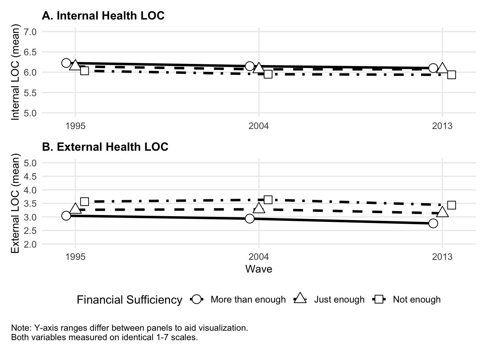

MIDUS DATASET
Last portfolio piece, I explored the Bayesian Modeling. Now, I want to answer a research gap.
## ── Attaching core tidyverse packages ──────────────────────── tidyverse 2.0.0 ──
## ✔ dplyr 1.2.0 ✔ readr 2.1.6
## ✔ forcats 1.0.1 ✔ stringr 1.6.0
## ✔ ggplot2 4.0.2 ✔ tibble 3.3.1
## ✔ lubridate 1.9.5 ✔ tidyr 1.3.2
## ✔ purrr 1.2.1
## ── Conflicts ────────────────────────────────────────── tidyverse_conflicts() ──
## ✖ dplyr::filter() masks stats::filter()
## ✖ dplyr::lag() masks stats::lag()
## ℹ Use the conflicted package (<http://conflicted.r-lib.org/>) to force all conflicts to become errors## This is cmdstanr version 0.8.0
## - CmdStanR documentation and vignettes: mc-stan.org/cmdstanr
## - CmdStan path: /Users/anaellegackiere/.cmdstan/cmdstan-2.38.0
## - CmdStan version: 2.38.0## Loading required package: Rcpp
## Loading 'brms' package (version 2.23.0). Useful instructions
## can be found by typing help('brms'). A more detailed introduction
## to the package is available through vignette('brms_overview').
##
## Attaching package: 'brms'
##
## The following object is masked from 'package:stats':
##
## arlibrary("labelled") # for me, quick checks
library("patchwork")
library("ggplot2")
library("tidybayes")##
## Attaching package: 'tidybayes'
##
## The following objects are masked from 'package:brms':
##
## dstudent_t, pstudent_t, qstudent_t, rstudent_t##
## Attaching package: 'psych'
##
## The following object is masked from 'package:brms':
##
## cs
##
## The following objects are masked from 'package:ggplot2':
##
## %+%, alpham1 <- read_sav("~/Desktop/R_Lab/R-Portfolio/p06/M1_survey.sav")
m2 <- read_sav("~/Desktop/R_Lab/R-Portfolio/p06/M2_survey.sav")
m3 <- read_sav("~/Desktop/R_Lab/R-Portfolio/p06/M3_survey.sav")## [1] 7108 2098## [1] 4963 2189## [1] 3294 2613## Min. 1st Qu. Median Mean 3rd Qu. Max. NA's
## 1.000 5.750 6.250 6.124 6.750 7.000 822## Min. 1st Qu. Median Mean 3rd Qu. Max. NA's
## 1.000 5.750 6.250 6.063 6.750 7.000 947## Min. 1st Qu. Median Mean 3rd Qu. Max. NA's
## 1.000 5.750 6.250 6.052 6.750 7.000 371## Min. 1st Qu. Median Mean 3rd Qu. Max. NA's
## 1.000 2.000 3.500 3.309 4.000 7.000 828## Min. 1st Qu. Median Mean 3rd Qu. Max. NA's
## 1.000 2.000 3.500 3.263 4.000 7.000 948## Min. 1st Qu. Median Mean 3rd Qu. Max. NA's
## 1.000 2.000 3.000 3.107 4.000 7.000 374## Min. 1st Qu. Median Mean 3rd Qu. Max. NA's
## 1.000 2.000 2.000 2.109 3.000 3.000 856## Min. 1st Qu. Median Mean 3rd Qu. Max. NA's
## 1.000 1.000 2.000 1.927 2.000 3.000 979## Min. 1st Qu. Median Mean 3rd Qu. Max. NA's
## 1.000 1.000 2.000 1.941 2.000 3.000 403# cleaning script
m1_clean <- m1 %>%
select(
person_id = M2ID,
age = A1PAGE_M2,
sex = A1PRSEX,
race = A1SS7R,
education = A1PEDUCP,
income = A1SHHTOT,
chronic = A1SCHRON,
fin_suff = A1SJ6,
hloc_self = A1SHLOCS,
hloc_others = A1SHLOCO
) %>%
mutate(wave = 1)
m2_clean <- m2 %>%
select(
person_id = M2ID,
fin_suff = B1SG6,
hloc_self = B1SHLOCS,
hloc_others = B1SHLOCO
) %>%
mutate(wave = 2)
m3_clean <- m3 %>%
select(
person_id = M2ID,
fin_suff = C1SG7,
hloc_self = C1SHLOCS,
hloc_others = C1SHLOCO
) %>%
mutate(wave = 3)
data_long <- bind_rows(m1_clean, m2_clean, m3_clean)
# since demographics only in M1, we'll fill them in for the other years
data_long <- data_long %>%
arrange(person_id, wave) %>%
group_by(person_id) %>%
fill(age, sex, race, education, income, chronic, .direction = "down") %>%
ungroup()## [1] 15365 11# Check missingness systematically
data_long %>%
group_by(wave) %>%
summarise(
n = n(),
miss_fin = sum(is.na(fin_suff)),
miss_hloc_self = sum(is.na(hloc_self)),
miss_hloc_others = sum(is.na(hloc_others)),
miss_race = sum(is.na(race)),
miss_edu = sum(is.na(education)),
miss_income = sum(is.na(income)),
miss_chronic = sum(is.na(chronic))
)## # A tibble: 3 × 9
## wave n miss_fin miss_hloc_self miss_hloc_others miss_race miss_edu
## <dbl> <int> <int> <int> <int> <int> <int>
## 1 1 7108 856 822 828 854 13
## 2 2 4963 979 947 948 294 8
## 3 3 3294 403 371 374 129 4
## # ℹ 2 more variables: miss_income <int>, miss_chronic <int># all three waves
data_long %>%
group_by(person_id) %>%
summarise(n_waves = sum(!is.na(hloc_self))) %>%
count(n_waves)## # A tibble: 4 × 2
## n_waves n
## <int> <int>
## 1 0 663
## 2 1 2296
## 3 2 1518
## 4 3 26312631 people have data from all three waves, which should be enough for the MLM.
The within-person sample is really the 2631 with all three waves plus some contribution from the 1518 with two. The unbalanced data structure would cause problems with frequentist estimation, so Bayesian MLM works well here.
# Recode missing value codes to NA
data_long <- data_long %>%
mutate(
fin_suff = ifelse(fin_suff %in% c(-1, 8), NA, fin_suff),
hloc_self = ifelse(hloc_self %in% c(-1, 99, 8), NA, hloc_self),
hloc_others = ifelse(hloc_others %in% c(-1, 99, 8), NA, hloc_others),
race = ifelse(race %in% c(-1, 8), NA, race),
education = ifelse(education == 9, NA, education),
income = ifelse(income == 999999, NA, income)
)
# Drop people with no outcome data at all
data_long <- data_long %>%
group_by(person_id) %>%
filter(sum(!is.na(hloc_self)) > 0) %>%
ungroup()
dim(data_long)## [1] 14502 11Centering Variables
# factor categorical vars
data_long <- data_long %>%
mutate(
sex = factor(sex),
race = factor(race),
education = factor(education)
)
# prep (making it so that it's easier to run since lots of levels)
data_long <- data_long %>%
mutate(
race_simple = case_when(
race == "1" ~ "White",
race == "2" ~ "Black",
TRUE ~ "Other"
) %>% factor(),
education_simple = case_when(
education %in% c("1", "2") ~ "HS or Less",
education == "3" ~ "Some College",
education == "4" ~ "College or More"
) %>% factor()
)
# all centering together after cleaning
data_long <- data_long %>%
mutate(
age_c = age - mean(age, na.rm = TRUE),
income_c = income - mean(income, na.rm = TRUE),
income_scaled = income_c / 10000,
chronic_c = chronic - mean(chronic, na.rm = TRUE),
wave_c = wave - mean(wave, na.rm = TRUE),
fin_suff_mean = ave(fin_suff, person_id,
FUN = function(x) mean(x, na.rm = TRUE))
)
# then save
saveRDS(data_long, "~/Desktop/R_Lab/R-Portfolio/p06/data_long.rds")if (file.exists("~/Desktop/R_Lab/R-Portfolio/p06/fit0.rds")) {
fit0 <- readRDS("~/Desktop/R_Lab/R-Portfolio/p06/fit0.rds")
} else {
fit0 <- brm(
hloc_self ~ 1 + (1 | person_id),
data = data_long,
family = gaussian(),
prior = c(
prior(normal(6, 2), class = Intercept),
prior(exponential(1), class = sd),
prior(exponential(1), class = sigma)
),
chains = 4,
iter = 2000,
warmup = 1000,
cores = 4,
seed = 42,
backend = "cmdstanr"
)
saveRDS(fit0, "~/Desktop/R_Lab/R-Portfolio/p06/fit0.rds")
}
# these run regardless
summary(fit0)## Loading required namespace: rstan## Family: gaussian
## Links: mu = identity
## Formula: hloc_self ~ 1 + (1 | person_id)
## Data: data_long (Number of observations: 13225)
## Draws: 4 chains, each with iter = 2000; warmup = 1000; thin = 1;
## total post-warmup draws = 4000
##
## Multilevel Hyperparameters:
## ~person_id (Number of levels: 6445)
## Estimate Est.Error l-95% CI u-95% CI Rhat Bulk_ESS Tail_ESS
## sd(Intercept) 0.53 0.01 0.51 0.55 1.00 1063 1960
##
## Regression Coefficients:
## Estimate Est.Error l-95% CI u-95% CI Rhat Bulk_ESS Tail_ESS
## Intercept 6.08 0.01 6.07 6.10 1.00 2760 2726
##
## Further Distributional Parameters:
## Estimate Est.Error l-95% CI u-95% CI Rhat Bulk_ESS Tail_ESS
## sigma 0.64 0.01 0.63 0.65 1.00 1701 2199
##
## Draws were sampled using sample(hmc). For each parameter, Bulk_ESS
## and Tail_ESS are effective sample size measures, and Rhat is the potential
## scale reduction factor on split chains (at convergence, Rhat = 1).var_components <- VarCorr(fit0)
var_between <- var_components$person_id$sd[1]^2
var_within <- var_components$residual__$sd[1]^2
icc <- var_between / (var_between + var_within)
icc## [1] 0.4087881The null model partitioned variance in internal health LOC into between-person and within-person components. The ICC of 0.41 indicates that 41% of total variance reflects stable individual differences, with the remaining 59% capturing within-person fluctuation across waves. This confirms that MLM is appropriate and that there is meaningful change to explain over time.
if (file.exists("~/Desktop/R_Lab/R-Portfolio/p06/modelfit1.rds")) {
fit1 <- readRDS("~/Desktop/R_Lab/R-Portfolio/p06/modelfit1.rds")
} else {
fit1 <- brm(
hloc_self ~
wave_c * fin_suff_mean +
(1 + wave_c | person_id),
data = data_long,
family = gaussian(),
prior = c(
prior(normal(6, 2), class = Intercept),
prior(normal(0, 1), class = b),
prior(exponential(1), class = sd),
prior(exponential(1), class = sigma),
prior(lkj(2), class = cor)
),
chains = 4,
iter = 4000,
warmup = 1000,
cores = 4,
seed = 42,
backend = "cmdstanr"
)
saveRDS(fit1, "~/Desktop/R_Lab/R-Portfolio/p06/modelfit1.rds")
}
summary(fit1)## Warning: There were 5 divergent transitions after warmup. Increasing
## adapt_delta above 0.8 may help. See
## http://mc-stan.org/misc/warnings.html#divergent-transitions-after-warmup## Family: gaussian
## Links: mu = identity
## Formula: hloc_self ~ wave_c * fin_suff_mean + (1 + wave_c | person_id)
## Data: data_long (Number of observations: 13168)
## Draws: 4 chains, each with iter = 4000; warmup = 1000; thin = 1;
## total post-warmup draws = 12000
##
## Multilevel Hyperparameters:
## ~person_id (Number of levels: 6390)
## Estimate Est.Error l-95% CI u-95% CI Rhat Bulk_ESS
## sd(Intercept) 0.53 0.01 0.51 0.54 1.00 2932
## sd(wave_c) 0.02 0.01 0.00 0.05 1.00 1989
## cor(Intercept,wave_c) -0.12 0.37 -0.79 0.68 1.00 11072
## Tail_ESS
## sd(Intercept) 5661
## sd(wave_c) 2971
## cor(Intercept,wave_c) 6348
##
## Regression Coefficients:
## Estimate Est.Error l-95% CI u-95% CI Rhat Bulk_ESS
## Intercept 6.34 0.03 6.28 6.41 1.00 6110
## wave_c -0.06 0.03 -0.12 -0.01 1.00 7804
## fin_suff_mean -0.13 0.02 -0.16 -0.10 1.00 6275
## wave_c:fin_suff_mean 0.00 0.01 -0.02 0.03 1.00 7869
## Tail_ESS
## Intercept 7354
## wave_c 7708
## fin_suff_mean 7348
## wave_c:fin_suff_mean 7540
##
## Further Distributional Parameters:
## Estimate Est.Error l-95% CI u-95% CI Rhat Bulk_ESS Tail_ESS
## sigma 0.63 0.01 0.62 0.65 1.00 4192 7162
##
## Draws were sampled using sample(hmc). For each parameter, Bulk_ESS
## and Tail_ESS are effective sample size measures, and Rhat is the potential
## scale reduction factor on split chains (at convergence, Rhat = 1).Model 1 tested whether chronic financial insufficiency predicted internal health LOC trajectories over 20 years, and whether its effect changed over time. Financial insufficiency was associated with lower internal health LOC (β = -0.13, 95% CI [-0.16, -0.10]), but the wave × financial insufficiency interaction was null (β = 0.00, 95% CI [-0.02, 0.03]) and random slope variance was negligible (SD = 0.02), indicating that trajectories did not meaningfully differ across people or financial groups. Model 2 therefore simplifies to a random intercept only.
# now fit 2
if (file.exists("~/Desktop/R_Lab/R-Portfolio/p06/modelfit2.rds")) {
fit2 <- readRDS("~/Desktop/R_Lab/R-Portfolio/p06/modelfit2.rds")
} else {
fit2 <- brm(
hloc_self ~
wave_c +
fin_suff_mean +
age_c + sex + race_simple + education_simple +
income_scaled + chronic_c +
(1 | person_id),
data = data_long,
family = gaussian(),
prior = c(
prior(normal(6, 2), class = Intercept),
prior(normal(0, 1), class = b),
prior(exponential(1), class = sd),
prior(exponential(1), class = sigma)
),
chains = 4,
iter = 4000,
warmup = 1000,
cores = 4,
seed = 42,
backend = "cmdstanr",
control = list(max_treedepth = 15, adapt_delta = 0.95) # reduce divergences
)
saveRDS(fit2, "~/Desktop/R_Lab/R-Portfolio/p06/modelfit2.rds")
}
summary(fit2)## Family: gaussian
## Links: mu = identity
## Formula: hloc_self ~ wave_c + fin_suff_mean + age_c + sex + race_simple + education_simple + income_scaled + chronic_c + (1 | person_id)
## Data: data_long (Number of observations: 12637)
## Draws: 4 chains, each with iter = 4000; warmup = 1000; thin = 1;
## total post-warmup draws = 12000
##
## Multilevel Hyperparameters:
## ~person_id (Number of levels: 6061)
## Estimate Est.Error l-95% CI u-95% CI Rhat Bulk_ESS Tail_ESS
## sd(Intercept) 0.51 0.01 0.49 0.53 1.00 3584 6320
##
## Regression Coefficients:
## Estimate Est.Error l-95% CI u-95% CI Rhat Bulk_ESS
## Intercept 6.27 0.06 6.16 6.38 1.00 9706
## wave_c -0.06 0.01 -0.08 -0.05 1.00 25341
## fin_suff_mean -0.08 0.02 -0.11 -0.05 1.00 10687
## age_c 0.00 0.00 -0.00 0.00 1.00 12263
## sex2 0.13 0.02 0.10 0.17 1.00 10326
## race_simpleOther -0.13 0.06 -0.25 -0.01 1.00 10069
## race_simpleWhite -0.04 0.04 -0.13 0.04 1.00 9790
## education_simpleHSorLess -0.10 0.02 -0.14 -0.05 1.00 9244
## education_simpleSomeCollege -0.03 0.02 -0.08 0.01 1.00 9327
## income_scaled 0.00 0.00 -0.00 0.01 1.00 11179
## chronic_c -0.04 0.00 -0.05 -0.03 1.00 11224
## Tail_ESS
## Intercept 9266
## wave_c 9818
## fin_suff_mean 10292
## age_c 10068
## sex2 10388
## race_simpleOther 9606
## race_simpleWhite 9394
## education_simpleHSorLess 9786
## education_simpleSomeCollege 9129
## income_scaled 9967
## chronic_c 10273
##
## Further Distributional Parameters:
## Estimate Est.Error l-95% CI u-95% CI Rhat Bulk_ESS Tail_ESS
## sigma 0.63 0.01 0.62 0.64 1.00 5658 8605
##
## Draws were sampled using sample(hmc). For each parameter, Bulk_ESS
## and Tail_ESS are effective sample size measures, and Rhat is the potential
## scale reduction factor on split chains (at convergence, Rhat = 1).Model 2 added demographic covariates to test whether financial insufficiency predicts internal health LOC above and beyond age, sex, race, education, objective income, and chronic illness. It does — people with chronically higher financial insufficiency reported meaningfully lower internal health LOC (β = -0.08, 95% CI [-0.11, -0.05]), while objective income showed essentially no independent association (β = 0.00). This suggests the psychological experience of financial stress, not material wealth itself, is what erodes perceived health agency.
# Model 0: Others
if (file.exists("~/Desktop/R_Lab/R-Portfolio/p06/modelfit0_o.rds")) {
fit0_o <- readRDS("~/Desktop/R_Lab/R-Portfolio/p06/modelfit0_o.rds")
} else {
fit0_o <- brm(
hloc_others ~ 1 + (1 | person_id),
data = data_long,
family = gaussian(),
prior = c(
prior(normal(3, 2), class = Intercept), # note: mean is ~3 not 6
prior(exponential(1), class = sd),
prior(exponential(1), class = sigma)
),
chains = 4,
iter = 2000,
warmup = 1000,
cores = 4,
seed = 42,
backend = "cmdstanr"
)
saveRDS(fit0_o, "~/Desktop/R_Lab/R-Portfolio/p06/modelfit0_o.rds")
}
summary(fit0_o)## Family: gaussian
## Links: mu = identity
## Formula: hloc_others ~ 1 + (1 | person_id)
## Data: data_long (Number of observations: 13213)
## Draws: 4 chains, each with iter = 2000; warmup = 1000; thin = 1;
## total post-warmup draws = 4000
##
## Multilevel Hyperparameters:
## ~person_id (Number of levels: 6441)
## Estimate Est.Error l-95% CI u-95% CI Rhat Bulk_ESS Tail_ESS
## sd(Intercept) 0.86 0.02 0.83 0.89 1.00 996 1989
##
## Regression Coefficients:
## Estimate Est.Error l-95% CI u-95% CI Rhat Bulk_ESS Tail_ESS
## Intercept 3.28 0.01 3.25 3.31 1.00 3010 3197
##
## Further Distributional Parameters:
## Estimate Est.Error l-95% CI u-95% CI Rhat Bulk_ESS Tail_ESS
## sigma 1.13 0.01 1.11 1.14 1.00 1611 2436
##
## Draws were sampled using sample(hmc). For each parameter, Bulk_ESS
## and Tail_ESS are effective sample size measures, and Rhat is the potential
## scale reduction factor on split chains (at convergence, Rhat = 1).var_components_o <- VarCorr(fit0_o)
var_between_o <- var_components_o$person_id$sd[1]^2
var_within_o <- var_components_o$residual__$sd[1]^2
icc_o <- var_between_o / (var_between_o + var_within_o)
icc_o## [1] 0.367357The null model for external health LOC yielded an ICC of 0.37, indicating that 37% of variance reflects stable between-person differences. Again, this is sufficient to justify MLM and suggests meaningful individual variation in external health attribution.
# Model 1: Others
if (file.exists("~/Desktop/R_Lab/R-Portfolio/p06/modelfit1_o.rds")) {
fit1_o <- readRDS("~/Desktop/R_Lab/R-Portfolio/p06/modelfit1_o.rds")
} else {
fit1_o <- brm(
hloc_others ~
wave_c * fin_suff_mean +
(1 + wave_c | person_id),
data = data_long,
family = gaussian(),
prior = c(
prior(normal(3, 2), class = Intercept),
prior(normal(0, 1), class = b),
prior(exponential(1), class = sd),
prior(exponential(1), class = sigma),
prior(lkj(2), class = cor)
),
chains = 4,
iter = 4000,
warmup = 1000,
cores = 4,
seed = 42,
backend = "cmdstanr"
)
saveRDS(fit1_o, "~/Desktop/R_Lab/R-Portfolio/p06/modelfit1_o.rds")
}
summary(fit1_o)## Family: gaussian
## Links: mu = identity
## Formula: hloc_others ~ wave_c * fin_suff_mean + (1 + wave_c | person_id)
## Data: data_long (Number of observations: 13156)
## Draws: 4 chains, each with iter = 4000; warmup = 1000; thin = 1;
## total post-warmup draws = 12000
##
## Multilevel Hyperparameters:
## ~person_id (Number of levels: 6386)
## Estimate Est.Error l-95% CI u-95% CI Rhat Bulk_ESS
## sd(Intercept) 0.83 0.02 0.80 0.86 1.00 2057
## sd(wave_c) 0.24 0.04 0.15 0.32 1.00 475
## cor(Intercept,wave_c) -0.55 0.11 -0.80 -0.38 1.00 584
## Tail_ESS
## sd(Intercept) 4613
## sd(wave_c) 1148
## cor(Intercept,wave_c) 1172
##
## Regression Coefficients:
## Estimate Est.Error l-95% CI u-95% CI Rhat Bulk_ESS
## Intercept 2.46 0.05 2.36 2.57 1.00 6541
## wave_c -0.15 0.05 -0.25 -0.06 1.00 7036
## fin_suff_mean 0.40 0.03 0.35 0.45 1.00 6687
## wave_c:fin_suff_mean 0.05 0.02 0.00 0.10 1.00 6952
## Tail_ESS
## Intercept 8061
## wave_c 8172
## fin_suff_mean 8258
## wave_c:fin_suff_mean 7969
##
## Further Distributional Parameters:
## Estimate Est.Error l-95% CI u-95% CI Rhat Bulk_ESS Tail_ESS
## sigma 1.10 0.01 1.07 1.12 1.00 706 1873
##
## Draws were sampled using sample(hmc). For each parameter, Bulk_ESS
## and Tail_ESS are effective sample size measures, and Rhat is the potential
## scale reduction factor on split chains (at convergence, Rhat = 1).Model 1 tested whether chronic financial insufficiency predicted external health LOC trajectories over time. Financial insufficiency was strongly and positively associated with external LOC (β = 0.40, 95% CI [0.35, 0.45]) — opposite in direction to the internal LOC finding — indicating that financially insufficient people attribute health control more to doctors and external forces. A credible interaction with wave (β = 0.05, 95% CI [0.00, 0.10]) and substantial random slope variance (SD = 0.24) suggested that trajectories differed meaningfully across people, so Model 2 retains the random slope structure.
if (file.exists("~/Desktop/R_Lab/R-Portfolio/p06/modelfit2_o.rds")) {
fit2_o <- readRDS("~/Desktop/R_Lab/R-Portfolio/p06/modelfit2_o.rds")
} else {
fit2_o <- brm(
hloc_others ~
wave_c * fin_suff_mean +
age_c + sex + race_simple + education_simple +
income_scaled + chronic_c +
(1 + wave_c | person_id),
data = data_long,
family = gaussian(),
prior = c(
prior(normal(3, 2), class = Intercept),
prior(normal(0, 1), class = b),
prior(exponential(1), class = sd),
prior(exponential(1), class = sigma),
prior(lkj(2), class = cor)
),
chains = 4,
iter = 4000,
warmup = 1000,
cores = 4,
seed = 42,
backend = "cmdstanr",
control = list(max_treedepth = 15, adapt_delta = 0.95)
)
saveRDS(fit2_o, "~/Desktop/R_Lab/R-Portfolio/p06/modelfit2_o.rds")
}
summary(fit2_o)## Family: gaussian
## Links: mu = identity
## Formula: hloc_others ~ wave_c * fin_suff_mean + age_c + sex + race_simple + education_simple + income_scaled + chronic_c + (1 + wave_c | person_id)
## Data: data_long (Number of observations: 12626)
## Draws: 4 chains, each with iter = 4000; warmup = 1000; thin = 1;
## total post-warmup draws = 12000
##
## Multilevel Hyperparameters:
## ~person_id (Number of levels: 6057)
## Estimate Est.Error l-95% CI u-95% CI Rhat Bulk_ESS
## sd(Intercept) 0.75 0.02 0.72 0.78 1.00 2627
## sd(wave_c) 0.23 0.04 0.15 0.31 1.01 670
## cor(Intercept,wave_c) -0.61 0.11 -0.87 -0.42 1.01 788
## Tail_ESS
## sd(Intercept) 5620
## sd(wave_c) 1452
## cor(Intercept,wave_c) 1455
##
## Regression Coefficients:
## Estimate Est.Error l-95% CI u-95% CI Rhat Bulk_ESS
## Intercept 2.65 0.09 2.47 2.84 1.00 8944
## wave_c -0.12 0.05 -0.21 -0.03 1.00 11122
## fin_suff_mean 0.30 0.03 0.24 0.35 1.00 9618
## age_c 0.02 0.00 0.01 0.02 1.00 11670
## sex2 -0.01 0.03 -0.06 0.05 1.00 10026
## race_simpleOther -0.10 0.09 -0.28 0.09 1.00 8924
## race_simpleWhite -0.23 0.07 -0.36 -0.09 1.00 8771
## education_simpleHSorLess 0.42 0.04 0.35 0.49 1.00 8430
## education_simpleSomeCollege 0.23 0.04 0.16 0.30 1.00 8285
## income_scaled -0.01 0.00 -0.01 -0.01 1.00 10294
## chronic_c 0.04 0.01 0.03 0.05 1.00 10522
## wave_c:fin_suff_mean 0.04 0.02 -0.01 0.09 1.00 10934
## Tail_ESS
## Intercept 9406
## wave_c 9348
## fin_suff_mean 9675
## age_c 9948
## sex2 10390
## race_simpleOther 9548
## race_simpleWhite 9498
## education_simpleHSorLess 9214
## education_simpleSomeCollege 9110
## income_scaled 9740
## chronic_c 9937
## wave_c:fin_suff_mean 8681
##
## Further Distributional Parameters:
## Estimate Est.Error l-95% CI u-95% CI Rhat Bulk_ESS Tail_ESS
## sigma 1.09 0.01 1.07 1.12 1.00 1070 2915
##
## Draws were sampled using sample(hmc). For each parameter, Bulk_ESS
## and Tail_ESS are effective sample size measures, and Rhat is the potential
## scale reduction factor on split chains (at convergence, Rhat = 1).After controlling for age, sex, race, education, objective income, and chronic illness, financial insufficiency remained a strong positive predictor of external health LOC (β = 0.30, 95% CI [0.24, 0.35]). The wave × financial insufficiency interaction was no longer credible once covariates were added, suggesting the trajectory difference in Model 1 was partially explained by demographic factors. Taken together with the internal HLOC results, chronic financial insufficiency is associated with a reorientation of health control beliefs; it simultaneously decreases internal agency and amplifies external attribution above and beyond what objective income alone captures.
Model selection was guided by theoretical considerations and inspection of random effects variance. For LOC-Self, the negligible random slope variance (SD = 0.02) and null wave × financial insufficiency interaction justified simplifying to a random intercept only in Model 2. For LOC-Others, substantial random slope variance (SD = 0.24) supported retaining the random slope structure throughout.
# Create n_waves variable in data_long
data_long <- data_long %>%
group_by(person_id) %>%
mutate(n_waves = sum(!is.na(hloc_self))) %>%
ungroup()
# Now run attrition analysis
data_long %>%
mutate(dropout = n_waves < 3) %>%
group_by(dropout) %>%
summarise(
n_people = n_distinct(person_id),
mean_fin = mean(fin_suff, na.rm = TRUE),
mean_hloc_self = mean(hloc_self, na.rm = TRUE),
mean_hloc_others = mean(hloc_others, na.rm = TRUE),
mean_income = mean(income, na.rm = TRUE),
mean_age = mean(age, na.rm = TRUE),
mean_chronic = mean(chronic, na.rm = TRUE)
)## # A tibble: 2 × 8
## dropout n_people mean_fin mean_hloc_self mean_hloc_others mean_income mean_age
## <lgl> <int> <dbl> <dbl> <dbl> <dbl> <dbl>
## 1 FALSE 2631 1.96 6.11 3.13 82189. 46.3
## 2 TRUE 3814 2.11 6.05 3.43 70169. 46.7
## # ℹ 1 more variable: mean_chronic <dbl>Visualization (unadjusted means)
traj_data <- data_long %>%
filter(!is.na(fin_suff) & !is.na(hloc_self) & !is.na(hloc_others)) %>%
mutate(fin_group = case_when(
fin_suff == 1 ~ "More than enough",
fin_suff == 2 ~ "Just enough",
fin_suff == 3 ~ "Not enough"
) %>% factor(levels = c("More than enough", "Just enough", "Not enough"))) %>%
filter(!is.na(fin_group)) %>%
group_by(wave, fin_group) %>%
summarise(
mean_self = mean(hloc_self, na.rm = TRUE),
se_self = sd(hloc_self, na.rm = TRUE) / sqrt(n()),
mean_others = mean(hloc_others, na.rm = TRUE),
se_others = sd(hloc_others, na.rm = TRUE) / sqrt(n()),
.groups = "drop"
)
pub_theme <- theme_minimal(base_size = 12) +
theme(
legend.position = "bottom",
plot.title = element_text(face = "bold", size = 12),
axis.title = element_text(size = 11),
panel.grid.minor = element_blank(),
strip.text = element_text(face = "bold")
)
pd <- position_dodge(width = 0.15)
p_self <- ggplot(traj_data, aes(x = wave, y = mean_self,
linetype = fin_group,
shape = fin_group,
group = fin_group)) +
geom_line(linewidth = 1.2, position = pd) +
geom_errorbar(aes(ymin = mean_self - se_self,
ymax = mean_self + se_self),
width = 0.08, position = pd) +
geom_point(size = 4, position = pd,
bg = "white", color = "black") +
scale_x_continuous(breaks = c(1, 2, 3),
labels = c("1995", "2004", "2013")) +
scale_linetype_manual(
values = c("solid", "dashed", "dotdash"),
labels = c("More than enough", "Just enough", "Not enough")
) +
scale_shape_manual(
values = c(21, 24, 22),
labels = c("More than enough", "Just enough", "Not enough")
) +
scale_y_continuous(limits = c(5, 7),
breaks = c(5, 5.5, 6, 6.5, 7)) +
labs(
title = "A. Internal Health LOC",
x = NULL,
y = "Internal LOC (mean)",
linetype = "Financial Sufficiency",
shape = "Financial Sufficiency"
) +
pub_theme
p_others <- ggplot(traj_data, aes(x = wave, y = mean_others,
linetype = fin_group,
shape = fin_group,
group = fin_group)) +
geom_line(linewidth = 1.2, position = pd) +
geom_errorbar(aes(ymin = mean_others - se_others,
ymax = mean_others + se_others),
width = 0.08, position = pd) +
geom_point(size = 4, position = pd,
bg = "white", color = "black") +
scale_x_continuous(breaks = c(1, 2, 3),
labels = c("1995", "2004", "2013")) +
scale_linetype_manual(
values = c("solid", "dashed", "dotdash"),
labels = c("More than enough", "Just enough", "Not enough")
) +
scale_shape_manual(
values = c(21, 24, 22),
labels = c("More than enough", "Just enough", "Not enough")
) +
scale_y_continuous(limits = c(2, 5),
breaks = c(2, 2.5, 3, 3.5, 4, 4.5, 5)) +
labs(
title = "B. External Health LOC",
x = "Wave",
y = "External LOC (mean)",
linetype = "Financial Sufficiency",
shape = "Financial Sufficiency"
) +
pub_theme
p_self / p_others +
plot_layout(guides = "collect") +
plot_annotation(
caption = "Note: Y-axis ranges differ between panels to aid visualization.\nBoth variables measured on identical 1-7 scales.",
theme = theme(plot.caption = element_text(hjust = 0, size = 9))
) &
theme(legend.position = "bottom")
ggsave("~/Desktop/R_Lab/R-Portfolio/p06/figure1_trajectories.png",
width = 8, height = 7, dpi = 300)Tables
vars <- c("hloc_self", "hloc_others", "fin_suff",
"income", "age", "chronic")
tab1 <- CreateTableOne(vars = vars, data = data_long)
print(tab1, showAllLevels = TRUE)##
## level Overall
## n 14502
## hloc_self (mean (SD)) 6.09 (0.83)
## hloc_others (mean (SD)) 3.25 (1.41)
## fin_suff (mean (SD)) 2.02 (0.67)
## income (mean (SD)) 76943.60 (66026.01)
## age (mean (SD)) 46.51 (12.45)
## chronic (mean (SD)) 2.34 (2.43)# Extract fixed effects from both models
self_results <- fixef(fit2) %>%
as.data.frame() %>%
rownames_to_column("Parameter") %>%
rename(
Estimate_Self = Estimate,
Error_Self = Est.Error,
Lower_Self = `Q2.5`,
Upper_Self = `Q97.5`
)
others_results <- fixef(fit2_o) %>%
as.data.frame() %>%
rownames_to_column("Parameter") %>%
rename(
Estimate_Others = Estimate,
Error_Others = Est.Error,
Lower_Others = `Q2.5`,
Upper_Others = `Q97.5`
)
# Merge
combined <- left_join(self_results, others_results, by = "Parameter") %>%
mutate(
Self = sprintf("%.2f [%.2f, %.2f]",
Estimate_Self, Lower_Self, Upper_Self),
Others = sprintf("%.2f [%.2f, %.2f]",
Estimate_Others, Lower_Others, Upper_Others)
) %>%
select(Parameter, Self, Others)
print(combined)## Parameter Self Others
## 1 Intercept 6.27 [6.16, 6.38] 2.65 [2.47, 2.84]
## 2 wave_c -0.06 [-0.08, -0.05] -0.12 [-0.21, -0.03]
## 3 fin_suff_mean -0.08 [-0.11, -0.05] 0.30 [0.24, 0.35]
## 4 age_c 0.00 [-0.00, 0.00] 0.02 [0.01, 0.02]
## 5 sex2 0.13 [0.10, 0.17] -0.01 [-0.06, 0.05]
## 6 race_simpleOther -0.13 [-0.25, -0.01] -0.10 [-0.28, 0.09]
## 7 race_simpleWhite -0.04 [-0.13, 0.04] -0.23 [-0.36, -0.09]
## 8 education_simpleHSorLess -0.10 [-0.14, -0.05] 0.42 [0.35, 0.49]
## 9 education_simpleSomeCollege -0.03 [-0.08, 0.01] 0.23 [0.16, 0.30]
## 10 income_scaled 0.00 [-0.00, 0.01] -0.01 [-0.01, -0.01]
## 11 chronic_c -0.04 [-0.05, -0.03] 0.04 [0.03, 0.05]combined <- combined %>%
mutate(Parameter = recode(Parameter,
"Intercept" = "Intercept",
"wave_c" = "Wave",
"fin_suff_mean" = "Financial insufficiency",
"age_c" = "Age",
"sex2" = "Sex (female)",
"race_simpleOther" = "Race: Other vs Black",
"race_simpleWhite" = "Race: White vs Black",
"education_simpleHSorLess" = "Education: HS or less",
"education_simpleSomeCollege" = "Education: Some college",
"income_scaled" = "Household income ($10k)",
"chronic_c" = "Chronic conditions",
"wave_c:fin_suff_mean" = "Wave × Financial insufficiency"
))
library(knitr)
kable(combined,
caption = "Table 2. Bayesian MLM Results for Internal and External Health LOC",
col.names = c("Predictor", "LOC-Self β [95% CI]",
"LOC-Others β [95% CI]"))| Predictor | LOC-Self β [95% CI] | LOC-Others β [95% CI] |
|---|---|---|
| Intercept | 6.27 [6.16, 6.38] | 2.65 [2.47, 2.84] |
| Wave | -0.06 [-0.08, -0.05] | -0.12 [-0.21, -0.03] |
| Financial insufficiency | -0.08 [-0.11, -0.05] | 0.30 [0.24, 0.35] |
| Age | 0.00 [-0.00, 0.00] | 0.02 [0.01, 0.02] |
| Sex (female) | 0.13 [0.10, 0.17] | -0.01 [-0.06, 0.05] |
| Race: Other vs Black | -0.13 [-0.25, -0.01] | -0.10 [-0.28, 0.09] |
| Race: White vs Black | -0.04 [-0.13, 0.04] | -0.23 [-0.36, -0.09] |
| Education: HS or less | -0.10 [-0.14, -0.05] | 0.42 [0.35, 0.49] |
| Education: Some college | -0.03 [-0.08, 0.01] | 0.23 [0.16, 0.30] |
| Household income ($10k) | 0.00 [-0.00, 0.01] | -0.01 [-0.01, -0.01] |
| Chronic conditions | -0.04 [-0.05, -0.03] | 0.04 [0.03, 0.05] |